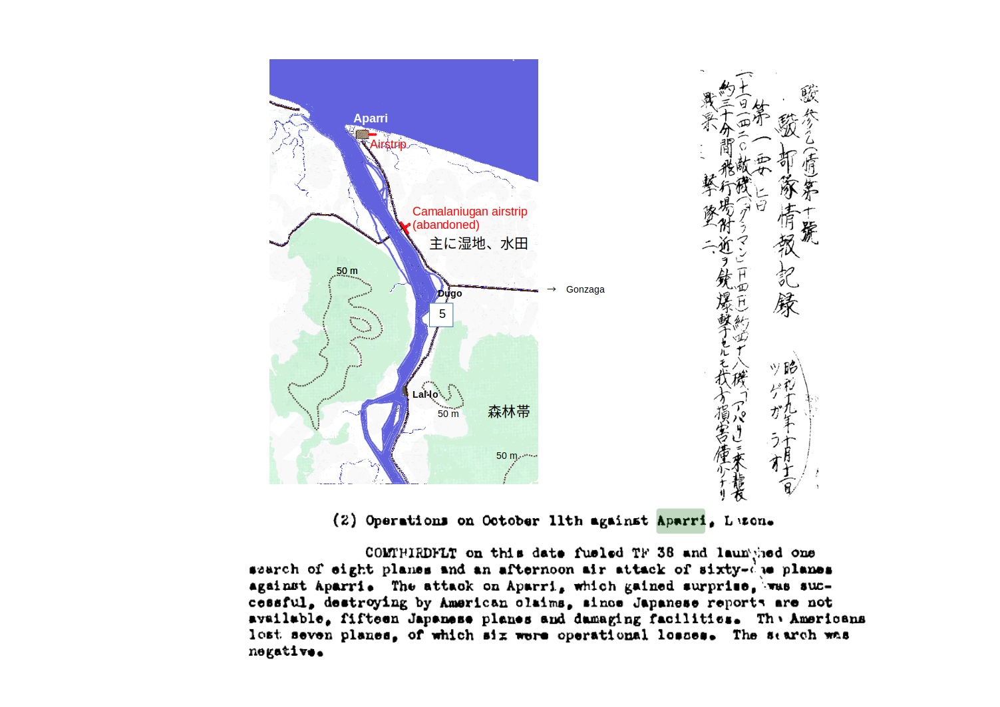
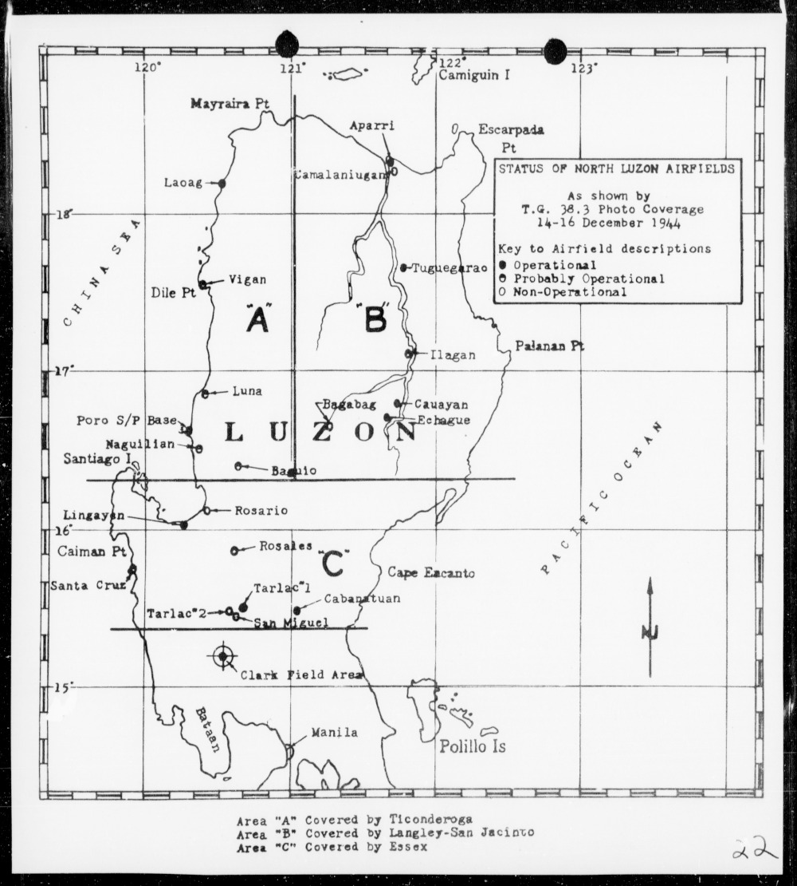

1944年アパリ飛行場への米機来襲¶
歩兵第179大隊第2中隊(矢野隊)陣中日誌抄ー10月 に戻る
1944年10月11日¶
{kind=link}
1944年10月11日、米軍第三艦隊(COMTHIRDFLT)第38任務部隊(TF38)の艦載機がアパリ飛行場を攻撃した。攻撃意図について"designed to deceive the enemy as to the next objective"、すなわち台湾攻撃前の陽動作戦だったという 1 。
米機攻撃の結果について、珍しいことではないが日米間でその報告内容が大きく食い違っている。日本側の記録 [syun10] では損害僅少となっているが、米側の記録 [nav53] では同日14時15分から艦載機61機で攻撃し、ほとんど反撃を受けずに、アパリ飛行場にあった15機を地上撃破し、また、飛行場施設を破壊したとしている 2 。日米を問わず航空作戦での戦果報告に誇張はつきものである。故意の嘘でなくても、パイロットたちの見間違い、思い込み、ダブルカウントは不可避であり、米戦果報告と損害実数とでは数倍以上の開きが出る例が大岡昇平「レイテ戦記」にも記されている。それでも、この日、アパリ飛行場に相当数の飛行機があったことを米軍パイロットたちは目にしており、日本側損害が数機以下ということはないのではないか。なお、撃墜された米機は米側報告では1機のみだったが、母艦着陸時の1機の事故により、さらに6機が失われたという 3 。事故を起こした1機はアパリで被弾していたと考えると、撃墜2という日本側の記録と符号する。
この日、まさか日中の来襲はないとたかをくくっていたアパリ飛行場の指揮官は不意をつかれ、飛行機の退避などの措置をとれなかったものと、後に米側は推測している。が、それにしても日本軍が米機動艦隊の位置をおおむね把握していながら、アパリへの来襲に全く無警戒だったのは理解できないというのである。
さらに、TF38は、10月14日と18日の早朝に艦載機各24機ずつでアパリとラオアグを襲った。14日、アパリではほとんど何の反撃も受けずに地上の5機を破壊したと報告している。駿部隊情報記録によると、18日には焼夷弾が落とされた。いずれも損害は軽微だったとされている。
それにしても、この時期、アパリ飛行場にはどの隊のどんな飛行機があったのだろうか。アパリ飛行場にどんな活動があったのかは戦史などであまり触れられていないので、以下に少し調べてみた。
- 1
この陽動作戦は、しかし、米側として総括すれば台湾の日本軍に一日の猶予を与えただけで、無意味だったとする。
- 2
"This strike, which hit at 1415, and was unopposed, was highly effective, and according to CTF 38, destroyed fifteen enemy aircraft on the ground, as well as fuel dumps and several buildings." なお、読谷村史 に「モリソン戦史」第12巻を抄訳引用して、このとき空戦があって日本機15が撃墜されと書かれているが、以下の原文では"on the ground"となっている。Samuel Eliot Morison, "History of United States Naval Operations in World War II, Vol. 12, Leyte, June 1944-January 1945", University of Illinois Press, 2001, pp. 92.
- 3
"a result of a deck crash of a returning fighter."
- syun10
「駿参乙（情）第１０号 駿部隊情報記録 昭和１９年１０月１２日」JACAR（アジア歴史資料センター）Ref.C14061218100、ツゲガラオ憲兵分隊 情報綴 昭１９．７．３～１９．１２．３（防衛省防衛研究所）; 「比島方面海軍作戦其の二（自一九四四年十月至一九四四年十二月）／第三レイテの戰／一、航空作戰」JACAR（アジア歴史資料センター）Ref.C14061100800、昭１９、１０～１９、１２比島方面海軍作戦其の２（防衛省防衛研究所）
ADL/A--003 026, THE BATTLE FOR LEYTE GULF, OCTGBER 1944. STRATEGICAL AND TACTICAL ANALYSIS. VOLUME 1. PRELIMINARY OPERATIONS UNTIL 0719 OCTOBER 17TH, 1944 INCLUDING BATTLE OFF FORMOSA, Richard W. Bates, National War College. より詳しくは、Battle for Leyte Gulf strategic and tactical analysis V.1, Preliminary Operations until 0719 October 17th, including Battle off Formosa, U.S.NAVAL WAR COLLEGE, 1953.
アパリとツゲガラオの飛行場¶
アパリの飛行場はルソン島最北端にあり、ラオアグやツゲガラオとならんで海上の哨戒や輸送船掩護にかかわったはずだが、あまり言及されない。戦史 [hitos] , [hito2] や第4航空軍記録類から記事を拾ってみた。
昭和19年春まで¶
昭和19年1月時点でフィリピンの飛行場は次のような状況だった 4 。
比島に於ける米軍の建設せる飛行場は一として見るべきものなく、辛じて「クラーク
フヰールド」の如きは稍々格構就きたるものと云へば云へないことはないが、之とて
も「エーヤポート」たる感がする。決して戦闘飛行場ではない。他は廣場に過ぎぬ。
「グライダー」練習場の域を脱しない。
「比島航空に関する一私見」、昭和19年1月1日、 渡集団参謀副長 小森田大佐
だから、司令官、兵士、タイピストを問わず、全員鋤鍬をもって飛行場設営に当たるべしとはっぱをかけたのだった。
- 4
「渡集団」は第14軍の略称。小森田親玄大佐は飛行第66戦隊長としてビルマ作戦に参加するなどの経験をもっていた。
昭和19年10月まで¶
クラーク基地
No.1: 300機以上
北: 200-300機
マバラカット: 100-200機
アンヘレス: 100-200機
その他の4飛行場合計: 300機以上
マニラ湾北のその他の3飛行場: 各50機未満
マニラ南
4飛行場（リパ含む）: 各50-100機
1飛行場: 50機未満
リンガエン地区の2飛行場: 各50-100機
ラオアグ、アパリ: 各50機未満
ツゲガラオ使用可能1飛行場: 50-100機
（フィリピン南部ではネグロス島のバコロド地区、ミンダナオ島のダバオ地区
などが大きな容量を持っていた。）
参考： Battle for Leyte Gulf strategic and tactical analysis V.1,
Preliminary Operations until 0719 October 17th, including Battle off
Formosa, U.S.NAVAL WAR COLLEGE, 1953.
1944年9-10月時点で、米軍のまとめたルソン島中部、北部の飛行場容量は上記のようである。
{kind=link}
フィリピンの飛行場（1944年9月中旬頃） [ch421] 。使用区分の「根」は根拠、「機」は機動。図ではツゲガラオ北とラオアグに「根」と記されているが、10月以降の方針ではいずれも戦闘機隊の機動飛行場として位置づけられた。ルソン島内の根拠基地はクラーク、マニラ、リパに置かれた。( [hitos] , p.262)¶
陸軍航空の主作戦方面が東部蘭印(オランダ領東インド:スマトラ島ーニューギニア島)からフィリピンに転換したのは昭和19年4-5月である。それにともない第4航空軍司令部は5-6月をかけてマニラに移った。7月にはサイパンが落ち、フィリピンが陸軍航空にとって最後の決戦場となるのは必至と考えられた。しかし、フィリピンの飛行場はどこもほとんど準備ができていないのだった。
フィリピンの全飛行場において燃料集積、修理や通信施設の設置が遅れていた。輸送力の不足と土木重機の不在が進捗を大きく制約していた。航空作戦の見地からは、フィリピンの「北部、中部、南部の価値を同一視」しており、進捗の遅れ、ばらつきは深刻な問題だった。
第103師団の担当区域に飛行場は、カガヤン河谷のアパリに1、ツゲガラオに3、北西海岸のラオアグに1あった。いずれも小さな飛行場である。
ラオアグ では5-6月には飛行第14戦隊の1個中隊が位置していて、毎日数機を発進させて輸送船団掩護にあたっていた 5 。これらの船団掩護作戦は「竹一船団」がマニラ-ニューギニア間で雷撃により大きな損害を出した直後から始まり、6月中で終了しているようである 6 。また、海軍航空隊が少数の偵察機の基地として使っていた。
アパリ飛行場周辺。A.M.S. S901(1944) [ams901b] と連合軍情報(1944年9月15日) [ags44] に基づく。 a: 巡視隊官舎. b: カソリック教会. c: Cagayan Valley Institute (1925創立の高校,ツゲガラオにもある). d: 病院. e: 郵便・電信局. f: 発電所. g: 兵営(旧校舎). h: 守備隊. i: Mitsui Lumber Co. (三井物産(木材)?) 7 . j: 燃料タンク設置場所と監視哨. k: 兵舎(複数)、指揮所. l: 修理工場. m: 墓地.¶
アパリ にはもともと、町の東側、海面数メートル高の飛行場のほか、6キロ南に「カマラニアン」(Camalaniugan)飛行場があった。後者は1941年12月の日本軍上陸前までは比島最大の空港と勘ちがいされていた [nanyo17] ので、日本軍は爆撃機基地にするつもりで占領したのだった。ところが、そこに立ってみると「湿潤せる耕作地を踏固したるもの」にすぎず、とても軍用に耐えなかった [hito1] 。そのため、Camalaniugan飛行場の方はほとんど使われないまま放置されていた。
12月の集計では、第4航空軍のルソン島内の兵員軍属あわせて約55,000名のうちほぼ3,700名がアパリとツゲガラオにあったというので、飛行場数で単純に比例配分して、アパリ飛行場には最大1,000名近くは常駐していたのだろうか。
アパリ飛行場では昭和19年7月初めには西部軍直協飛行隊 8 の九九式軍偵が、7-8月には、飛行第2戦隊の1個中隊の司偵がルソン北東海上の哨戒、船団掩護を行っていた 9 。8月末から一ヶ月は独立飛行第44中隊が同任務についた。また、9月には対空通信隊などもアパリで活動を始めていた。しかし、9月以降になるとアパリを拠点とした飛行隊の記録ははっきりしない。飛行第67戦隊が9月末にアパリ、ラオアグをとまり木的に使った形跡があるくらいである。
一方、 ツゲガラオ では、陸海軍現地協定(9月1日付)に基づき、9月から飛行第27戦隊の一部が位置して、九九式襲撃機数機を用いて近距離海上哨戒、船団掩護、敵船掃蕩にあたっていた [27f44] 。カガヤン河谷をアパリ上空までのぼり、そこから西方海上をラボック(Lapog)、ときにはリンガエンまで南下、または、アパリ上空からバタン諸島まで北上している。毎回、往復4時間ほどの飛行である。しかし、9月下旬になるとミンダナオ、レイテ方面に米艦載機が来襲し、対応のためにツゲガラオの空中人員もほとんどはクラークやネグロス島に移された。10月15日、ツゲガラオに残っていた2機（中尉機１、軍曹機1）が「独断東方海面の敵機動部隊を攻撃」、「壮烈なる自爆」を遂げた 10 。戦隊はただちに九九式襲撃機と二式複戦（屠龍）の2機をツゲガラオに補充した。10月末に第27戦隊がほとんどレイテ方面の作戦のために移動した後も、ツゲガラオからの哨戒・連絡飛行は何らかの形で継続されたと思われる。
昭和19年10月13日からの台湾航空戦では、第４航空軍は海軍支援のために陸軍機の参加を図った。航続距離の制限からツゲガラオ飛行場を中継基地とする進攻作戦をたてた。しかし、基地の準備不十分、かつ、バシー海峡悪天候のため実施できなかったという。(戦史 [hitos] では、ツゲガラオからかろうじて15機が進攻できたが、戦果のないまま翌日帰還したという。)
アパリ飛行場が米艦載機の襲撃を受けた10月11日 ころ、アパリに飛行隊があったのかどうか、はっきりしない。10月13日からの台湾航空戦に向けてツゲガラオ飛行場を中継基地としたとき、その容量あるいは準備不足の関係で、アパリをとまり木に使おうとした可能性も考えられたが、記録では確認できなかった。
南方軍が航空軍の出動可能機数を随時集計している。それによると、西部軍直協飛行隊(当時は第4飛行師団隷下)が9月13日に軍偵8機を有していたものが、10月19日には4機に減っている。西直ははじめはアパリにあったが、このときはどこを拠点としていたのか定かでないし、このときの機数減の理由も記されていないので、10月11、14日の件と関係があるかどうかは確認できない。なお、西直は残った4機をもって10月24日までにはネグロス島の独立第10飛行団に移っている。部隊略歴では飛行第67戦隊は9月28日に台湾からアパリに着き、10月8日にツゲガラオに移っているが、11日時点でまだアパリにとどまっていた機があったかどうか。
昭和19年12月以降¶
12月に入ると米機編隊が北部ルソン全域の飛行場  を調査していった( 調査結果抜粋 ) [nlaf44] 。
{kind=link}
第14方面軍は、米軍がルソン島リンガエン方面に上陸すれば、マニラ、クラークの両航空基地は直ちに拠点としての機能を失うことから、カガヤン河谷の飛行場を拠点化すべきとの判断だった。それを受けて第4航空軍が北部ルソンの航空作戦準備に着手したのはようやく12月31日のことだった。昭和20年1月7日、第4航空軍司令部はマニラ死守の方針をあきらめて、エチアゲに移ることにした(着いたのは10日である)。その前後もクラークやマニラに残っていた少数機による特攻攻撃が果敢に続けられていた。
第4航空軍司令部はエチアゲに移ったものの、カガヤン河谷の基地群では指揮通信にも不自由、航空資材、燃料の集積も少なすぎるという状況だった。もっと根本的な問題は、飛行場の準備状況如何にかかわらず、第14方面軍司令部の 「自活自戦永久抗戦」 [ruson1219] の幻想のなかに、すでに消耗の極にあった航空軍を置くすべがないことだった。
海軍の航空隊は10日に台湾に後退した 11 。海軍航空隊搭乗員はツゲガラオ経由で台湾に向かった。1月14日以降、カガヤン河谷にもB-25爆撃機が来襲した。陸軍第4航空軍も司令部の独断で、司令部と空中勤務者ならびに優秀なる整備員、あわせて260名を戦力恢復のために台湾に移すことにした。ただし、第4飛行師団の軍偵中隊1、司偵戦隊及び戦闘中隊1はカガヤン河谷に残して第14方面軍のために捜索連絡にあたらせることとした。
1月下旬以降、台湾移動を指示された航空軍人員は自力で、あるいは台湾-ツゲガラオ間をピストンで運ばれたのだったが、対象者全員が飛び立てたわけではなかった。空輸できなかった将兵はアパリに集結させた。海軍艦船による輸送を期待したり、第4航空軍自ら機帆船を台湾で徴傭して救出を図ったりしたのだったが、失敗した [hito2] 。隊によってはルソン東北端のサンビセンテ(San Vicente)まで行ってむなしく船を待った。
6月13日夜-14日朝のオリオン峠(Oriung Pass)での戦いは、日本軍第103師団主力
にとって最後の大きな戦闘任務だった。179大隊の二個中隊が峠北方で壊滅した
あとは、同師団はマガット河(Magat River)を越えて西方に落ちて行った。6月14日
夕には米第37師団が、サンチアゴの８マイル東、飛行場のあるエチアゲ(Echague)
に進軍した。
Robert Ross Smith, Triumph in the Philippines, Center of Military History,
United States Army, Washington, D.C., 1993
6月14日、エチアゲ飛行場に残っていた最後の99式軍偵機が台湾へ飛び立った [52r] 。
各地に残置された航空軍人員はそれぞれの地で地上戦闘に組み込まれた。戦闘を生き延びた将兵は周辺の山地に逃げ込むか、 コルディリェラ山岳地帯の第14方面軍複郭 に向けて落ちていった。
歩兵第179大隊第2中隊(矢野隊)陣中日誌抄ー10月 に戻る
2024年4月18日
- 5
厚生省援護局が昭和36年にまとめた「陸軍航空部隊略歴（その１） 付．航空部隊の隷指揮下にあったその他の部隊／分割７」では飛行第14戦隊の１部が4-6月にアパリに展開していたことになっている。しかし、「第４航空軍発電綴 自昭和１８年８月至昭和１９年１２月」では、同時期にはラオアグから同戦隊が船団掩護に出た記録のみがあり、アパリ飛行場への言及は全くない。
- 6
戦史 [hitos] では、昭和19年夏頃に飛行第45戦隊がラオアグを基地として船団掩護の任にあたっていたとする。「飛行第４５戦隊」JACAR（アジア歴史資料センター）Ref.C12121156900、南東方面航空部隊の兵力 及編制資料 其の１（４分冊）（防衛省防衛研究所）の移動履歴ではラオアグを基地としていたしていたことは確認できないが、ラオアグから少数機が発進していたことは間違いないのであろう。
- 7
仲原善徳の「比律賓紀行」(昭和16年)には、アパリに大阪貿易関係者が木材輸出を準備していることに触れているが、三井物産木材部への言及はないので、日本軍の進攻後に三井が製材所あるいは貿易拠点を作ったものか？
- 8
西直はルソン移動当初だけ南方軍の直接指揮下だったが、第４飛行師団指揮下に移された。夏以降の行動履歴は不詳。10月下旬にはネグロス島の独立第10飛行団のもとに移っている。
- 9
飛行第2戦隊のアパリ展開時期は厚生省援護局「陸軍航空部隊略歴」。
- 10
この日、第38機動部隊(Fast Carrier Task Force, TF38）がルソン東方海上にあった。
- 11
海軍関係では基地航空隊地上員のほかに沈没艦船乗員も含めて軍人軍属50,000以上がルソン島に滞留していた。これらの軍人軍属はさまざまな形で陸軍の作戦に組み込まれた。
- ams901b
Aparri, Philippine Islands, Cagayan Province. A.M.S. S901. [TIFF]. Washington, D.C. : Army Map Service, U.S. Army, 1944.. Retrieved from https://maps.princeton.edu/catalog/princeton-nc580p340)
- ags44
Sketch Plan Aparri, Allied Geographic Section, 15 Sep. 1944.
- nanyo17
『南洋案内』,南洋協会,昭和17. 国立国会図書館デジタルコレクション https://dl.ndl.go.jp/pid/1044059 (参照 2024-02-09)
- hito1
「比島作戦記録第１期」JACAR（アジア歴史資料センター）Ref.C14020645200、比島作戦記録第１期 Ｓ２１．６調（防衛省防衛研究所）
- hito2(1,2)
「航空作戦記録（第二期比島作戦）」昭和20年8月、第一復員局;「第二次比島航空作戦」（原稿）、昭和20年8月、一復、史実調査部
- hitos(1,2,3,4)
戦史叢書「比島捷号陸軍航空作戦」、防衛庁防衛研修所、戦史室著、朝雲新聞社、昭和46年8月25日発行
- ch421
「第４章 後方の状況」JACAR（アジア歴史資料センター）Ref.C16120085400、比島航空作戦記録 第２期 昭２１．１０（防衛省防衛研究所）
- ruson1219
第１４方面軍、「ルソン島作戦指導要綱」、昭和19年12月19日
- 27f44
JACAR（アジア歴史資料センター）Ref.C16120149200、飛行第２７戦隊第２中隊陣中日誌 昭１９．９．１～１９．１０．３１（防衛省防衛研究所）。陸海協定の兵力部署ではツゲガラオでの27FR哨戒任務は2式複戦となっているが、この陣中日誌によると主に九九襲が使われている。ただし、日誌として見られたのは第２中隊だけだが、作命文脈から判断して、ツゲガラオ派遣隊は複数の隊から抽出された乗員からなっていたようである。
- 52r
独立飛行第52中隊略歴、「陸軍航空部隊略歴（その２） 付．航空部隊の隷指揮下にあったその他の部隊／分割４」JACAR（アジア歴史資料センター）Ref.C12122420300、陸軍航空部隊略歴（その２） 付．航空部隊の隷指揮下にあったその他の部隊（防衛省防衛研究所）
- nlaf44
COMTASK-GROUP 38.3 - Rep of air ops Against Luzon Is, Philippines 12/14-16/44.